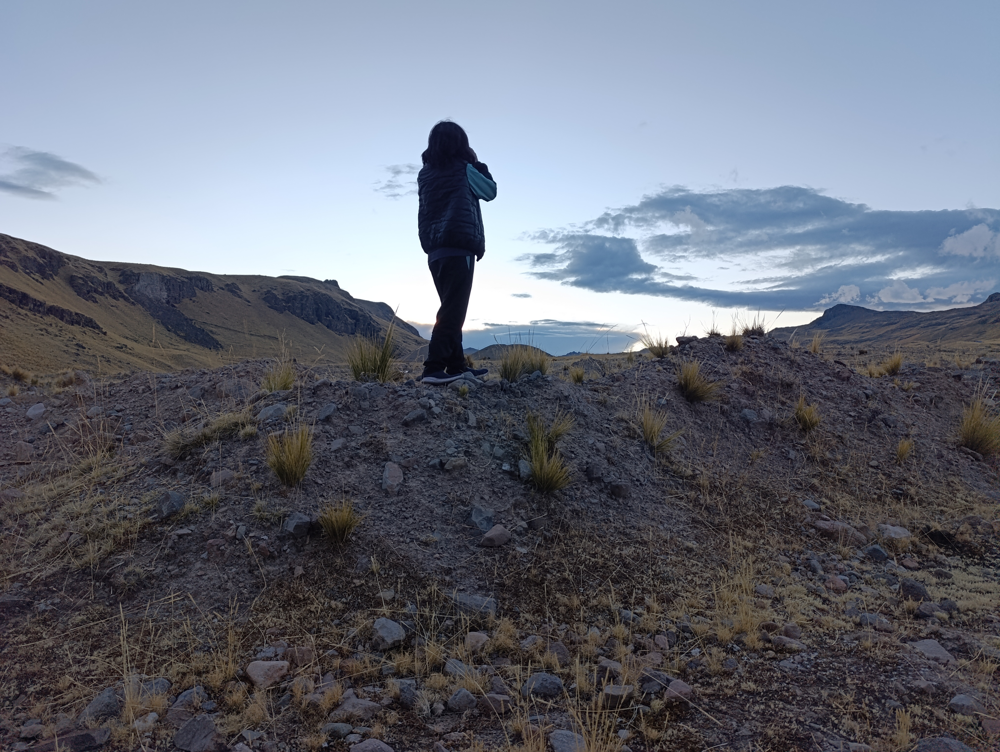
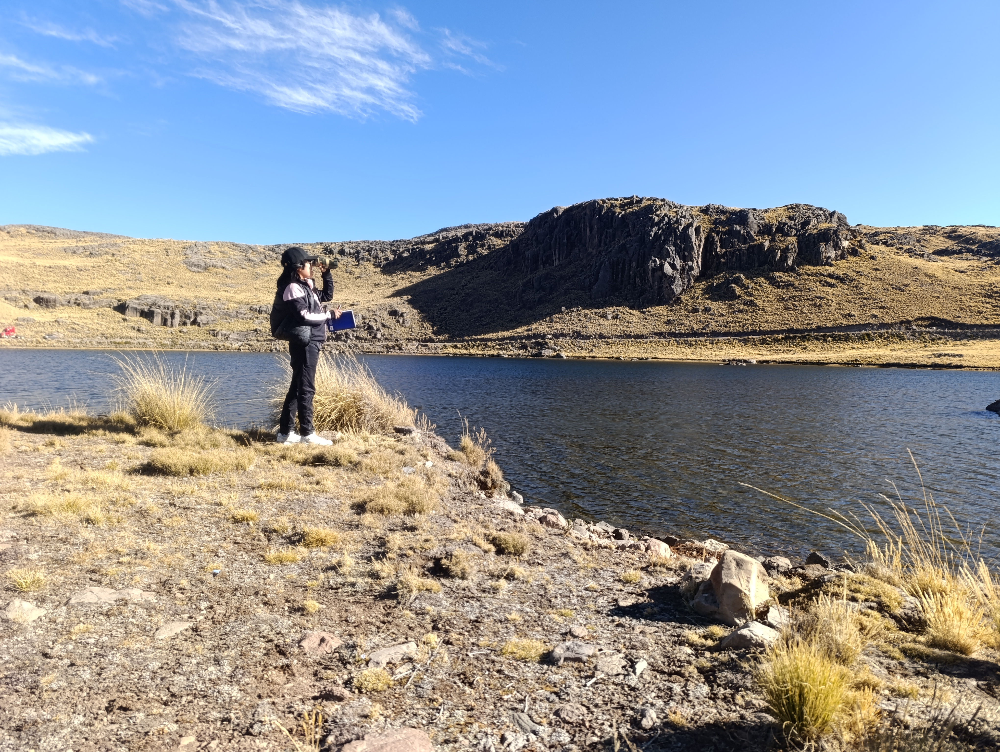
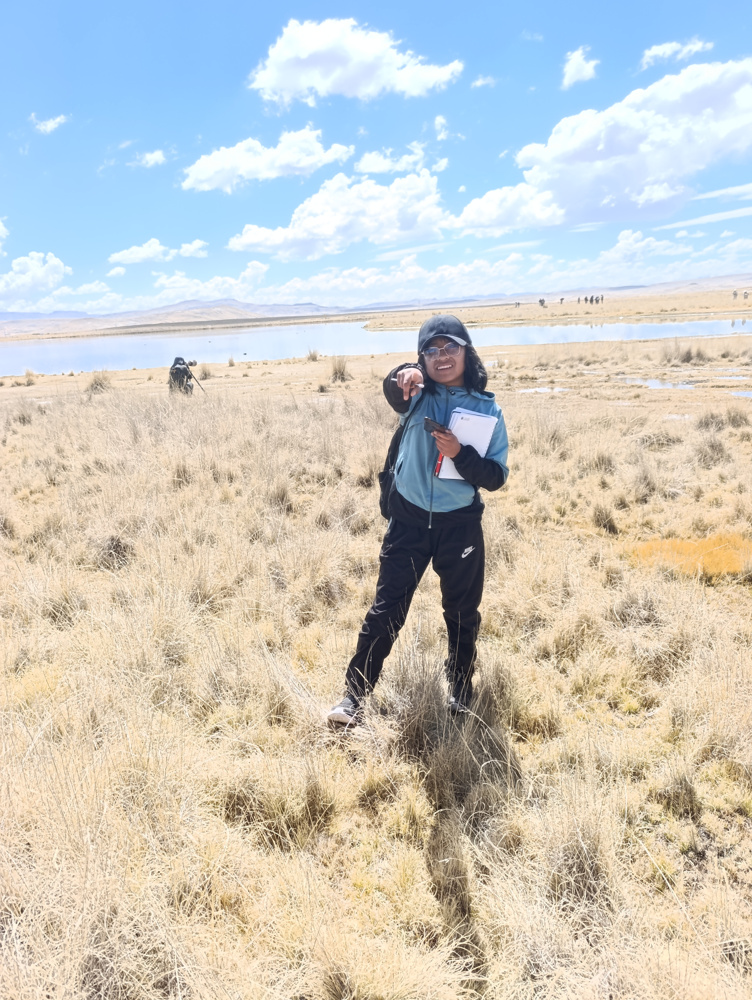

Laguna de Apanta
16 especies · toca para ver
Espinar, Cusco
Aquí también vuelan historias
Avistamiento de aves en las lagunas andinas



Línea de tiempo de la investigación
1 / 7
Equipo de investigación
Autora
Andrea Sky Huamani Hilario
Docente
Prof. Wilson Huaylla
Asesor
Dr. Wilber Huamani Paccaya
Agradecimientos